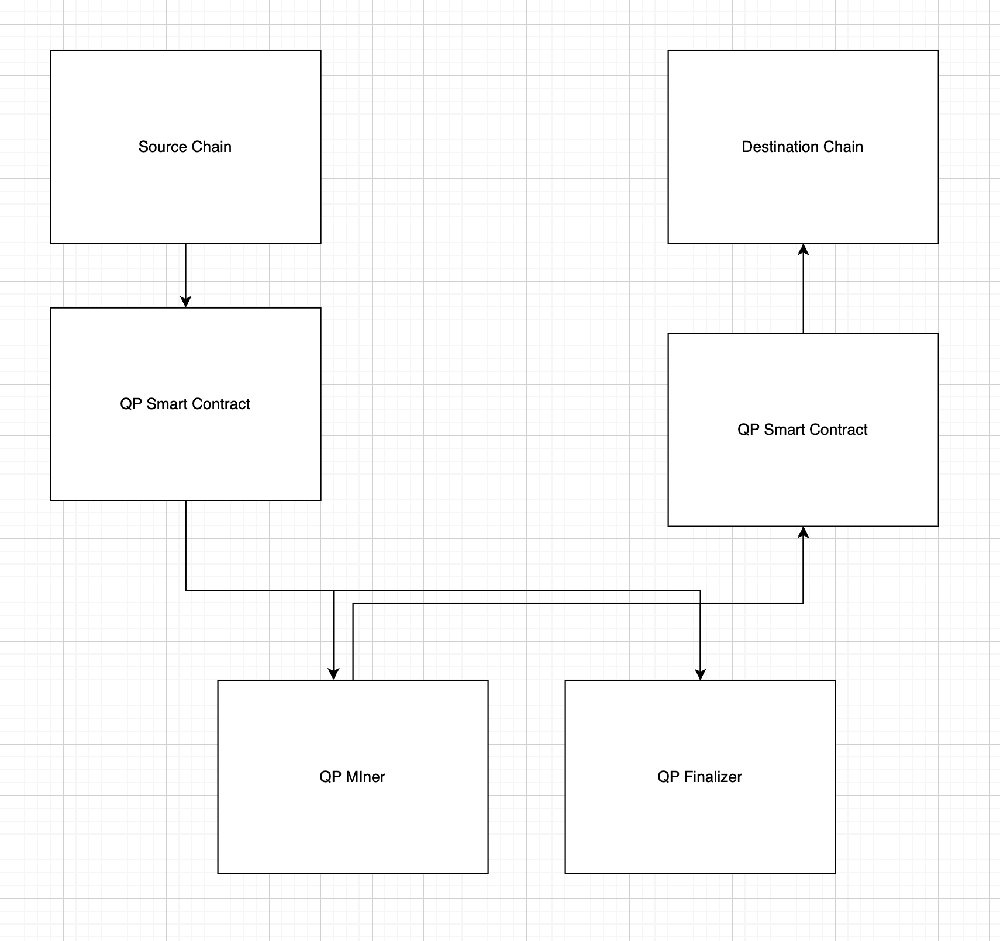

Run a Ferrum Testnet Node
Table of Contents:
- Introduction
- Types of Nodes
- How Quantum Portal Works
- What is QP Mining
- What is QP Finalisation
- System Requirements
- Account Requirements
- Node Prerequisites
Introduction
Collators/collators are members of the network that maintain the parachains they take part in. They run a full node (for both their particular parachain and the relay chain), and they produce the state transition proof for relay chain collators.
Candidates will need a minimum amount of tokens bonded (self-bonded) to be considered eligible. Along with running a collator node for the ferrum blockchain, you can choose to run a specific type of Ferrum node, which help in validating cross chain transactions on the ferrum network.
Types of Nodes
The different types of nodes of ferrum network:
Collator node
Running a collator node means you pariticipate in the block production of ferrum network. Once your collator node is up and running, you can choose to be a block producer candidate, and if you have a minimum amount of tokens you would be selected for block production. Currently we do not have staking or rewards for block production but we plan to support this in the future.
Miner Node (QP Miner)
A miner node is responsible for mining cross chain transactions, these nodes will observe the qp chain pairs and mine blocks on each other chains. This type of node can be run in conjunction with a collator node or indepdently to mine the block on the pair chain. Do note that running this node requires a minimum amount of tokens to pay for transaction costs on the pair chains.
Finalizer Node (QP Finalizer)
The finalizer node is responsible for finalizing the mined blocks, these nodes will observe the mined blocks on the pair chains and finalize the block on the pair chain. This type of node can be run in conjunction with a collator node or indepdently to finalize the block on the pair chain. Do note that running this node requires a minimum amount of tokens to pay for transaction costs on the pair chains.
Archive Node
The archive node is the simplest type of node, the node will sync and update the latest block on the ferrum chain. This type of node is useful to run an indexer or explorer.
How Quantum Portal works
Quantum Portal is part of the Ferrum Runtime Node. When you deploy the Ferrum Network node you can configure it to mine or validate Quantum Portal transactions of Ferrum Network transactions as a collator on the network.
Overview
Quantum Portal is part of the Ferrum Runtime Node. When you deploy the Ferrum Network node you can configure it to mine or validate Quantum Portal transactions of Ferrum Network transactions as a collator on the network.
Quantum Portal includes the following core components:
- QP Smart Contract
- QP Miner
- QP Finalizer

What is Quantum Portal Mining?
The QP Miners take turns based on an algorithm to create and relay these blocks from the sourceChain to the destinationChain. QP Miners do this by running the Ferrum Node as a QP Miner (QP Node). Once configured, this QP Node monitors the transactions on the network that they have set up to be miners and staked tokens on. The QP Node monitors transactions on the sourceChain and if new data is available, it creates a block every 15 seconds. After creating a block, the QP Node calls the mineRemoteBlock on the destinationChain in order to execute the transaction and mine the QP Block. It is considered a mined block after the transaction executes on the destinationChain
What is Quantum Portal Finalisation?
The QP collators take turns based on an algorithm to pick the pending (mined but not finalized) Quantum Portal Blocks from the Quantum Portal Mined Block mempool. QP collators do this by running the Ferrum Node as a QP collator (QP Node). Once configured, this QP Node monitors the Quantum Portal Mined Block mempool for mined Quantum Portal Blocks, If new data is available, it creates a finalized block every 15 seconds. After creating a finalized block, the QP Node calls the finalizeRemoteBlock on the destinationChain in order to record the block as finalized and execute any remote transactions if applicable. The QP Block. It is considered a finalized block after the finalizeRemoteBlock transaction executes on the destinationChain Once mined QP Blocks are finalized, the record of the finalized mined blocks and the finalized block itself is added to the destinationChains.
System Requirements
The most common way for a beginner to run a validator is on a cloud server running Linux. You may choose whatever VPS provider that your prefer. As OS it is best to use a recent Debian Linux. For this guide we will be using Ubuntu 22.04, but the instructions should be similar for other platforms.
Reference Hardware
The transaction weights in Polkadot are benchmarked on reference hardware. We ran the benchmark on VM instances of two major cloud providers: Google Cloud Platform (GCP) and Amazon Web Services (AWS). To be specific, we used c2d-highcpu-8 VM instance on GCP and c6id.2xlarge on AWS. It is recommended that the hardware used to run the validators at least matches the specs of the reference hardware in order to ensure they are able to process all blocks in time. If you use subpar hardware you will possibly run into performance issues, get less era points, and potentially even get slashed.
CPU
x86-64 compatible; Intel Ice Lake, or newer (Xeon or Core series); AMD Zen3, or newer (EPYC or Ryzen); 4 physical cores @ 3.4GHz; Simultaneous multithreading disabled (Hyper-Threading on Intel, SMT on AMD); Prefer single-threaded performance over higher cores count. A comparison of single-threaded performance can be found here.
Storage
An NVMe SSD of 1 TB (As it should be reasonably sized to deal with blockchain growth). An estimation of current chain snapshot sizes can be found here. In general, the latency is more important than the throughput.
Memory
16GB DDR4 ECC. System Linux Kernel 5.16 or newer.
Network
The minimum symmetric networking speed is set to 500 Mbit/s (= 62.5 MB/s). This is required to support a large number of parachains and allow for proper congestion control in busy network situations.
The specs posted above are not a hard requirement to run a collator, but are considered best practice. Running a collator is a responsible task; using professional hardware is a must in any way.
Account Requirements
Similar to Polkadot validators, you need to create an account. For Ferrum, this is an H160 account or an Ethereum-style account from which you hold the private keys. As a collator, you are responsible for correctly managing your own keys. Incorrectly doing so can result in a loss of funds.
There are many Ethereum wallets that can be used, but for production purposes it is recommended to generate keys as securely as possible. It is also recommended to generate backup keys.
To generate keys securely it is recommended to do so on an air-gapped machine. Once you generate your keys make sure you store them safely. To securely store your keys, here are some recommendations, from least to most secure:
Write down and laminate your keys Engrave your keys into a metal plate Shard your keys using a tool like Horcrux As always, it is recommended to do your own research and use tools that you vet as trustworthy.
Node Prerequisites
Once you choose your cloud service provider and set-up your new server, the first thing you will do is install Rust.
If you have never installed Rust, you should do this first.
If you have already installed Rust, run the following command to make sure you are using the latest version.
rustup update
If not, this command will fetch the latest version of Rust and install it.
curl https://sh.rustup.rs -sSf | sh -s -- -y
Finally, run this command to install the necessary dependencies for compiling and running the Polkadot node software.
sudo apt install make clang pkg-config libssl-dev build-essential